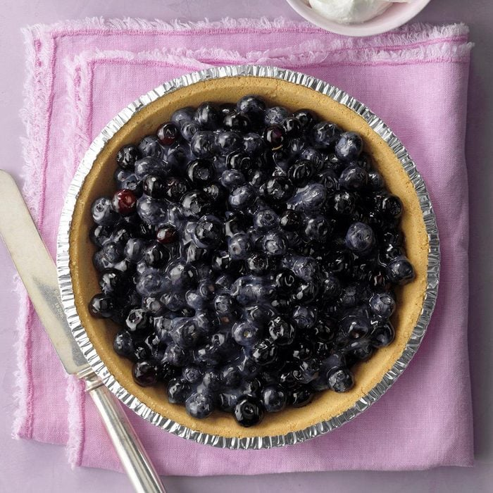

BLUEBERRY PIE

Description
Can you really make a pie in five minutes? Yes! The fresh fruit filling cooks on the stove-top for exactly five minutes,
after which you simply pour it into a graham cracker crust. It is a great summer pie to share at a picnic.
Ingredients
- 1/2 cup sugar
- 2 tablespoons cornstarch
- 3/4 cup water
- 4 cups fresh or frozen blueberries, thawed
- 1 graham cracker crust (9 inches)
- Whipped cream, optional
Directions
- In a large saucepan, combine sugar and cornstarch. Stir in water until smooth.
- Bring to a boil over medium heat; cook and stir for 2 minutes.
- Add blueberries. Cook for 3 minutes, stirring occasionally.
- Pour into crust. Chill. Garnish with whipped cream if desired.
- Your Dessert is ready!